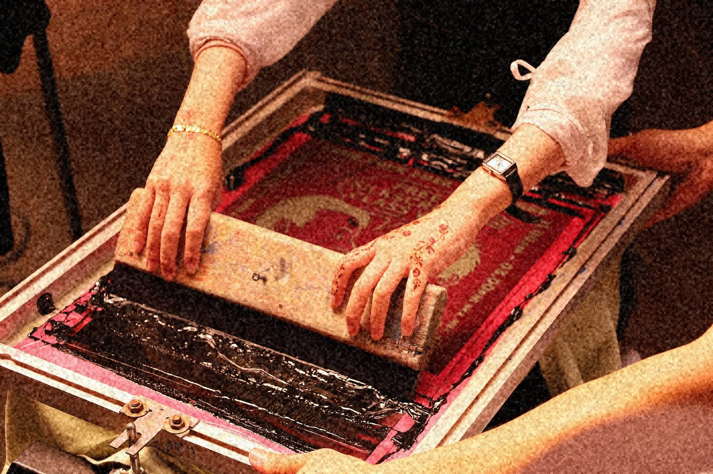
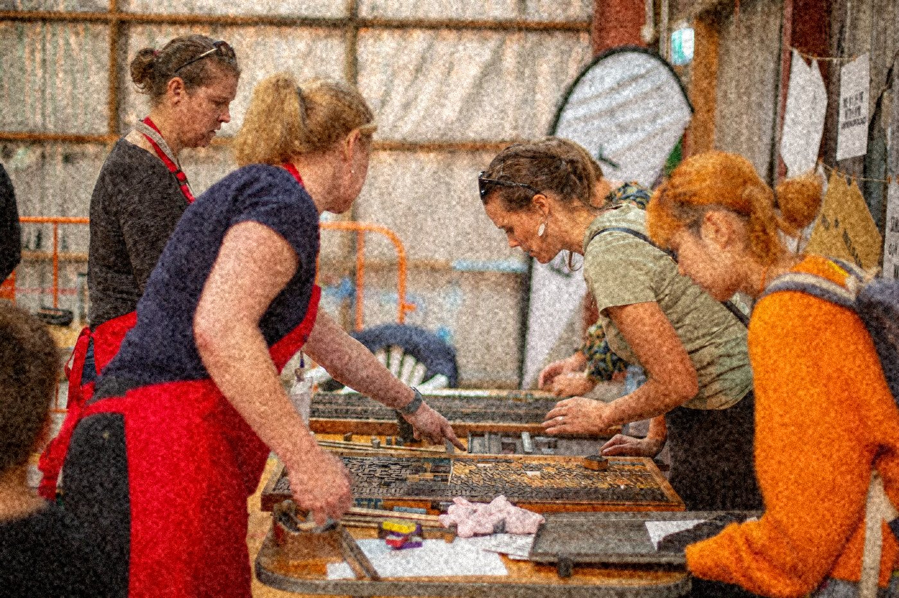
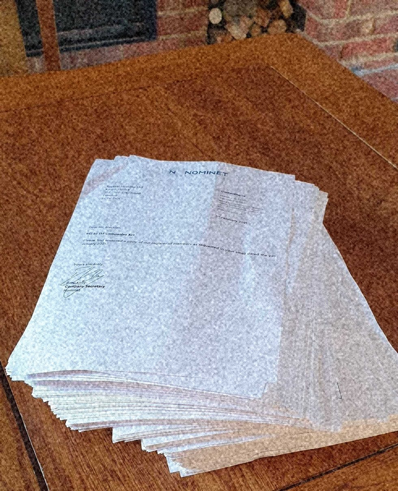

校版：两版各印一次
第 4 期只用两个专色。主版橙红先印，第二版墨绿后印，中间隔一个下午让纸回潮。套准偏差在实物上是 0.2 到 0.4 毫米，在屏幕上按 0.8 到 1.6 像素复现，每一页的偏差量都不一样，所以每一页的叠印颜色也都不一样。

| 版次 | 油墨 | 印次 | 套准偏差 | 叠印实测 |
|---|---|---|---|---|
| 主版 | 橙红 一版一次 | 第 1 次 | 基准 | — |
| 第二版 | 墨绿 后印 | 第 2 次 | 0.8px | — |
| 叠印区 | 两版相压 | 第 2 次 | 1.2px | 相乘 #181C0D |
叠印那一格不是选出来的颜色：把橙红和墨绿按正片叠底乘一遍，得到的才是它。你可以把鼠标停在下图的叠印区上，看它在两版之间怎么变深。

第 4 期目录
- 刊号
- ISSN 2671-8042 第 4 期
- 印数
- 300 本，售出 214 本
- 装订
- 三个人一个下午穿完，前后 4 小时
- 纸张
- 未涂布纸 100g，内页 132 页
- 工序
- 绷网 3 月 6 日 晒版 3 月 9 日 试印 3 月 12 日
正式印 3 月 14 日 折页 3 月 15 日 装订 3 月 16 日 - 余量
- 试印与印坏共 11 本，入库 289 本
编者按：这一期不按笔画排，也不按作者排。排法就是上机顺序，先印的先出现，所以目录读起来像一张工单。
- 开印：从一张网开始 郑元熙 18
- 刮板的角度与压力：三次试印 郑元熙 24
- 油墨黏度：一天里的三次变化 韩智秀 31
- 压版：机器不会替你决定 李在勋 46
- 网点糊掉之后，我们改了纸张 李在勋 52
- 附录：四次调压记录（含压力表读数） 编务 61
- 裁切与折页：300 本怎么对齐 朴成恩 88
- 装订线：三个人一个下午 朴成恩 104
正在取第 18 页的试读件，油墨还没干。
这一页还没回片：第 104 页的实拍在等暗房冲洗。可以留邮箱，出片后我们寄一张给你。
叠印：第三种颜色是算出来的
两版分开印，谁也没画过那个暗橄榄色。它出现在两版相压的地方，是橙红和墨绿相乘的结果。下面三格是同一期的三页，套准偏差各不相同，所以叠印的颜色深度也各不相同。
同一张纸上的三个页面，套准偏差各不相同，所以叠印的深浅也各不相同。
把鼠标移到任意一格上，那一格会暗 4%，你可以看清叠印区和单版区的分界。叠印区的颜色是把两版按正片叠底乘出来的，不是吸管选的。
三种缩进各自代表什么



第 5 期：还没排目录
这一期还没排目录。第 3 期的稿子还在作者手上改第 4 遍。
第 5 期叫「一遍印不到底」，三月二十日开印，印数还是 300 本。留下的邮箱只用来寄开印通知，不转给任何人，也不做别的用途。
正在记下这个地址。
邮箱里少了 @，开印那封信寄不到你手上。
记下了。开印当天上午寄一封，没有第二封。